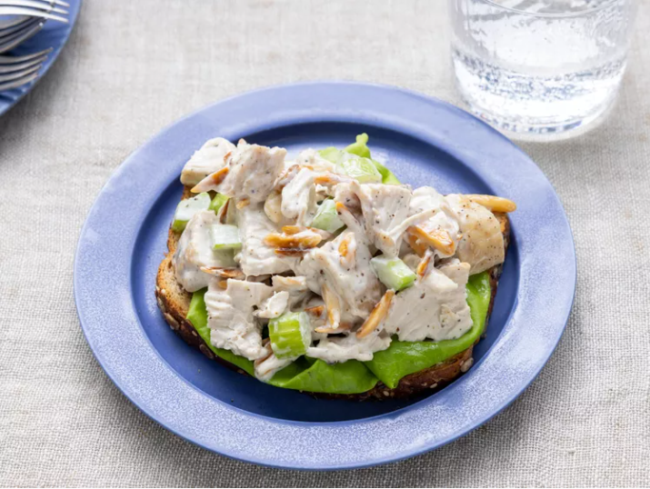

Best Chicken Salad

This chicken salad recipe is the best and a family favorite! I like to use leftover roast chicken or baked chicken breasts that have been sprinkled with basil or rosemary.
Everyone needs a good, basic chicken salad recipe in their collection of fool-proof dishes. Homemade chicken salad is quick and easy to make with just a handful of everyday
ingredients, and is perfect for warm weather picnics, potlucks, lunches, or light dinners. You can add or substitute chicken salad ingredients to suit your preferences,
and it's genius at using up leftovers.
I'll show you how to make tasty chicken salad using this top-rated recipe for Basic Chicken Salad, and share plenty of tips and ideas along the way.
How to Make Chicken Salad
This recipe for homemade chicken salad uses six simple ingredients and takes only 10 minutes to make from start to finish. After that, you can serve it up on salad greens,
scoop it into pita bread or half an avocado, roll it up in a tortilla for a wrap, or serve it hot in a quesadilla or chicken melt.
Chicken Salad Ingredients
These are the simple ingredients you'll need to make this basic chicken salad recipe:
- Chicken:You'll need cooked chicken, chopped or shredded. If you have leftover roast chicken, grilled chicken, or rotisserie chicken, chicken salad is a great way to use it all up.
You can also use canned chicken to make chicken salad (drain it first), or you can cook chicken for chicken salad. Use white or dark meat, or a combination of both if you prefer. - Mayonnaise:Creamy mayonnaise binds together all the separate ingredients for chicken salad into a satisfying mixture of flavors and textures. Use your choice of regular or reduced fat mayonnaise.
In this chicken salad recipe, the mayonnaise is enhanced with a tablespoon of lemon juice for brightness and a ¼ teaspoon of ground black pepper. Taste the dressing before mixing it with the chicken;
you may find it needs a little salt or other flavor-booster from your spice collection. - Celery:Fresh, crisp celery adds both flavor and crunch. Be sure to chop the celery into small, uniform pieces so it's easier to eat.
- Almonds:Here's the secret ingredient that makes this chicken salad recipe stand apart. Blanched slivered almonds (available at any grocery store) are quickly
pan-toasted to bring out their nutty flavor, and then added to the chicken salad mixture. - 2 cups blanched slivered almonds
- 2 cups mayonnaise
- 4 tablespoons lemon juice
- 1 teaspoon ground black pepper
- 2 quart chopped, cooked chicken meat
- 4 stalk celery, chopped
Optional Chicken Salad Recipe Add-Ins
There's a lot you can do with a good basic recipe for chicken salad. Add minced fresh herbs like parsley, chives, basil, or tarragon. Add fresh grapes for juicy little bursts of flavor.
Add cooked pasta to stretch the chicken salad into a larger meal. (You'll have to increase the amount of mayonnaise mixture to cover the pasta.) Add chopped apples and walnuts
to make it a Chicken Waldorf Salad. Experiment with add-ins to make this chicken salad recipe your own.
How to Store Chicken Salad
Store chicken salad in an airtight container in the refrigerator. Stored properly, chicken salad should last for three to five days. If you served chicken salad over salad greens,
try to store the greens separately to prevent them from getting soggy and wilted.
Can You Freeze Chicken Salad?
We do not recommend freezing chicken salad because the mayonnaise will separate as it thaws.
Ingredients for 8 Servings
Directions
Step 1
Gather all ingredients.
Step 2
Place almonds in a frying pan. Toast over medium-high heat, shaking frequently. Watch carefully, as they burn easily.
Step 3
Mix together mayonnaise, lemon juice, and pepper in a medium bowl.
Step 4
Toss with chicken, toasted almonds, and celery.
Step 5
Enjoy!
Nutrition Facts
Servings Per Recipe:2
Calories:779
-------------------------------------------------------------------------------------------------------------------------------------% Daily Value *
Total Fat: 63g ----------------------------------------------------------------------------------------------------------------------- 81%
Saturated Fat: 9g ----------------------------------------------------------------------------------------------------------------- 45%
Cholesterol: 126mg ---------------------------------------------------------------------------------------------------------------- 42%
Sodium: 403mg --------------------------------------------------------------------------------------------------------------------- 18%
Total Carbohydrate: 8g ---------------------------------------------------------------------------------------------------------- 3%
Dietary Fiber: 3g ------------------------------------------------------------------------------------------------------------------ 10%
Total Sugars: 2g -------------------------------------------------------------------------------------------------------------------
Protein: 44g ----------------------------------------------------------------------------------------------------------------------- 89%
Vitamin C: 4mg ------------------------------------------------------------------------------------------------------------------- 5%
Calcium: 100mg -------------------------------------------------------------------------------------------------------------------- 8%
Iron: 3mg --------------------------------------------------------------------------------------------------------------------------- 16%
Potassium: 572mg --------------------------------------------------------------------------------------------------------------- 12%
* Percent Daily Values are based on a 2,000 calorie diet. Your daily values may be higher or lower depending on your calorie needs.
** Nutrient information is not available for all ingredients. Amount is based on available nutrient data.
(-) Information is not currently available for this nutrient. If you are following a medically restrictive diet, please consult your
doctor or registered dietitian before preparing this recipe for personal consumption.